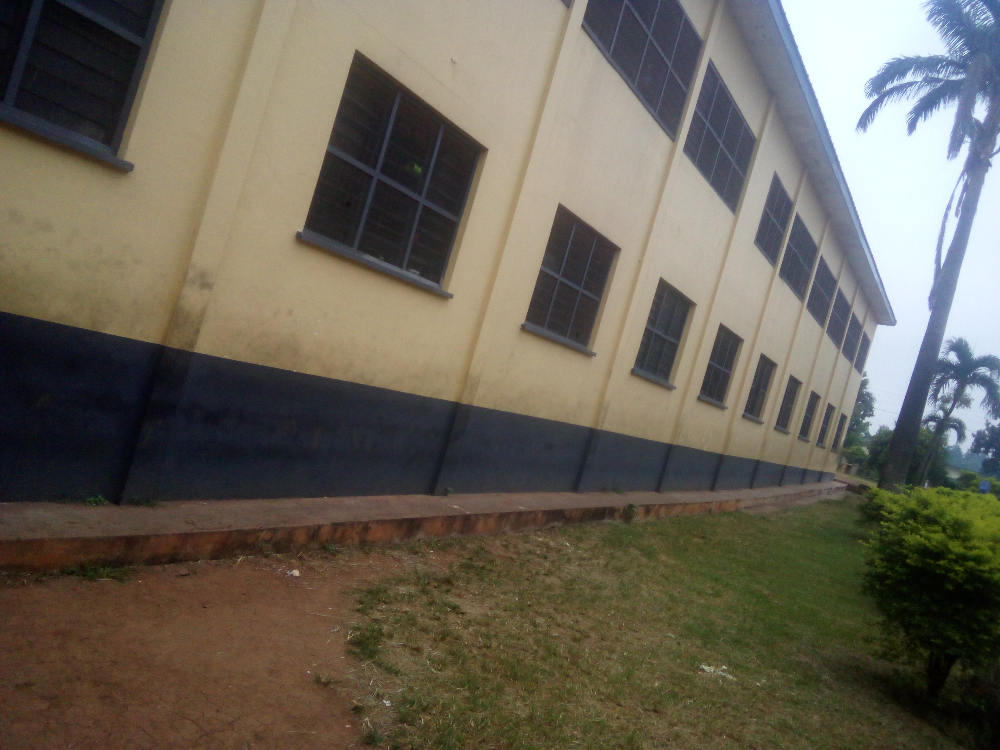
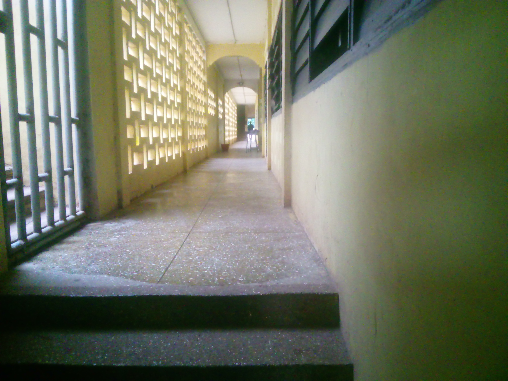

Osei Tutu House is named after Otumfuo Sir Osei Tutu Agyeman Prempeh II, the 14th Asantehene (King of the Asante Kingdom), who reigned from 1931 to 1970.As the primary royal patron of the school, Otumfuo Sir Osei Tutu Agyeman Prempeh II donated the vast tract of land at Sofoline in Kumasi on which Prempeh College was built and actively championed the establishment of a premier secondary school in the Ashanti Region alongside the Methodist and Presbyterian churches and the British Colonial Government. Naming one of the pioneer houses after him directly honored his patronage. Strategically situated right next to the College Dining Hall, Osei Tutu House is known across campus for its vibrant camaraderie, spotless dormitories, and unmatched spirit during inter-house competitions.


Dedicated prep supervision and peer mentorship to top the college honor roll. Striving to be first in academics and school leadership, reflecting the prestige of the Golden Stool (Sika Dwa Kofi).
Competing with pride in inter-house athletics, football, and basketball.
Just as Otumfuo Osei Tutu I united the independent Ashanti states under the Golden Stool, the house emphasizes tight-knit solidarity—looking out for fellow housemates across year groups ("seniors" and "juniors") and standing together during inter-house competitions.
Living out the Prempeh College motto of Character and Integrity every day. As a house deeply tied to Ashanti history right in the heart of Kumasi, members uphold respect for elders, school customs, and cultural pride.
Sir Stro is currently the main Housemaster for Osei Tutu House assisted by Man of Steel The main house prefect is Boateng Jerry also assited by Elliot Elorm
Osei Tutu House's leadership roles;
Below is the past housemasters of Osei Tutu House;
| NAME | PERIOD |
|---|---|
| Mr. Osei | 1960-1971 |
| Mr. Ofori | 1971-1984 |
| Mr. Agyei | 1984-1993 |
| Mr. Kyei | 1993-2001 |
| Mr. Mensah | 2001-2018 |
| Sir Stro | 2018-date |
For the past Main House Prefects:
| NAME | YEAR |
|---|---|
| Owusu Elvis | 2015 |
| Amponsah Oheneba | 2016 |
| Ankrah F. Jeremiah | 2017 |
| Sekyi Nathaniel | 2018 |
| Nana Osei Aboagye | 2019 |
| Nsiah Solomon | 2020 |
All cubicles, trunks, and chop boxes must be neatly arranged by 6:30 AM.
All O.T House members meet at Main classroom block,Room 9 for Bible Studies
All O.T House members meet at Space gardens for house prayers